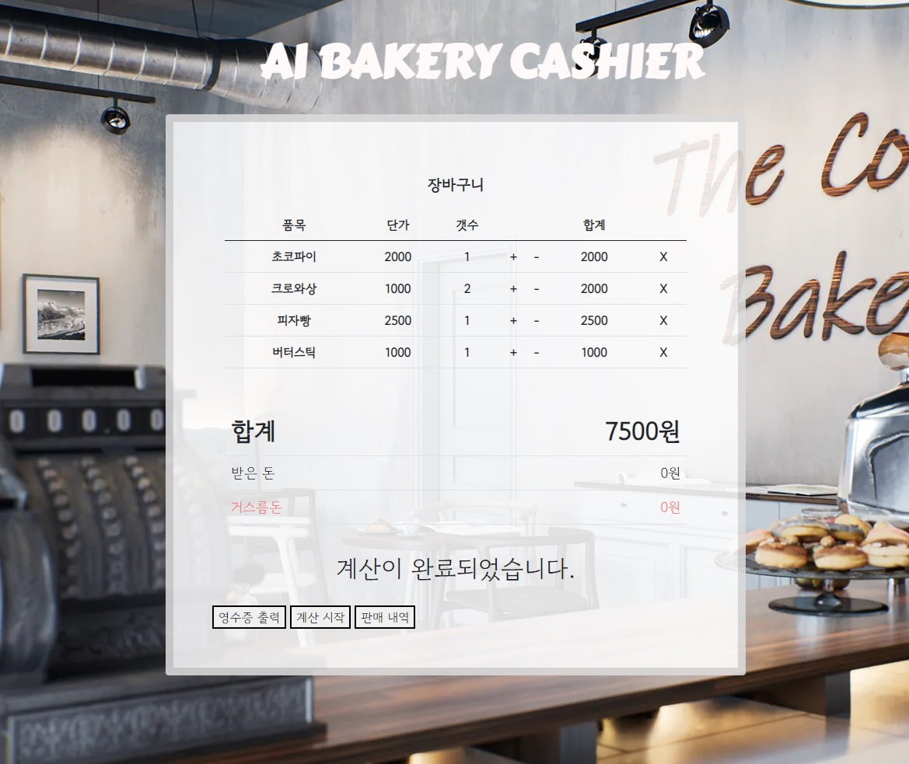
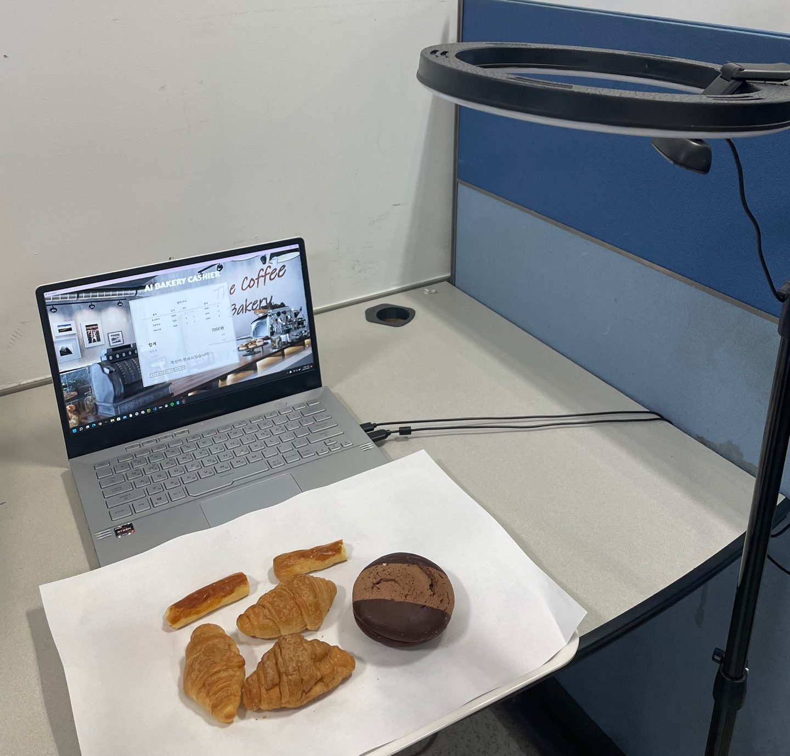

| NAME | 오유경 |
|---|---|
| BIRTHDAY | 1996 - 10 - 08 |
| PHONE | 010 8478 3159 |
| miayu.1008@gmail.com |
개발자가 되어서 다 패버릴거야!
안녕하세요, 개발자로써 첫 걸음을 시작하려는 주니어 개발자 오유경 입니다🥳
현재는 Backend 위주의 일을 구직하고 있으나 향후 Frontend 까지 겸하는 Fullstack Developer가 되는 것이 목표입니다.
좀 더 자세한 이력서는 이곳을 참고 해주세요.
다뤄본 적 있거나 자주 사용하는 기술들 입니다
2021 07 - 2021 09
동아리에 처음 가입한 당시 2학년 선배, 1학년 동기와 함께 진행한 프로젝트 입니다.
1학년 당시에는 JavaScript에 미숙하여 주로 프론트엔드 부분을 맡았으며 계산 완료 후 영수증 출력 (Php 이용), 데이터 수집 부분을 맡았습니다.
비디오가 재생되지 않는다면 아래 주소로 들어가 봐 주세요!
2022 07 - 현재 보완 중
 
2학년으로 올라와 1학년 당시 진행했던 빵집알파고 프로젝트를 한층 업그레이드 시켜 진행한 프로젝트 입니다.
빵집알파고는 Google Teachable Machine을 이용하여 상품을 하나하나 인식해야 했지만 본 프로젝트는 Yolov5 오픈소스를 이용하여
상품 모델 사진을 수집하고, 인공지능으로 훈련시켜 실시간으로 한번에 다양한 상품을 인식 가능하게 하였습니다.
2학년 동기와 함께 진행한 프로젝트로 스스로 무언가 해냈다는 자신감을 심어준 뜻 깊은 프로젝트 입니다.